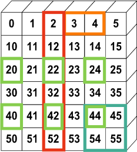
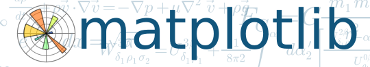
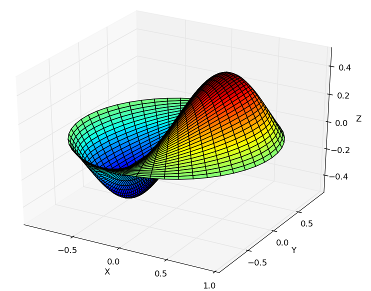
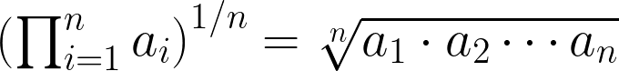
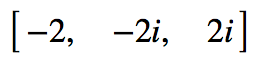
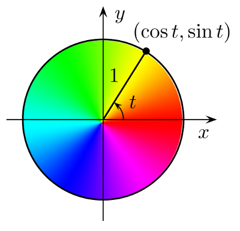

Why SciPy?
Most languages don't support things useful for science, e.g.:
Vector primitives
Complex numbers
Statistics
Object oriented programming isn't always the right paradigm for analysis applications, but is the only way to go in many modern languages
SciPy brings the pieces that matter for scientific problems to Python
An array object of arbitrary homogeneous items
Fast mathematical operations over arrays
Linear Algebra, Fourier Transforms, Random Number Generation

SciPy Lectures , CC-BY

Plotting library and API for NumPy data

Computational methods for:
Spatial is the tools across all of the domains of science, very general.
That said, can be useful in a variety of circumstances, e.g. KDTree for finding data quickly.
SciPy: Geometric Mean
Calculating a geometric mean of an entire raster using SciPy (source )

import scipy.stats
rast_in = 'data/input_raster.tif'
rast_as_numpy_array = arcpy.RasterToNumPyArray(rast_in)
raster_geometric_mean = scipy.stats.stats.gmean(
rast_as_numpy_array, axis=None )
Pan el Da ta — like R "data frames"Bring a robust data analysis workflow to Python
(Source )
import pandas
data = pandas.read_csv('data/season-ratings.csv' )
data.columnsIndex([u'season' , u'households' , u'rank' , u'tv_households' , \
u'net_indep' , u'primetime_pct' ], dtype='object' )
majority_simpsons = data[data.primetime_pct > 50 ] season households tv_households net_indep primetime_pct
0 1 13.4m[41] 92.1 51.6 80.751174
1 2 12.2m[n2] 92.1 50.4 78.504673
2 3 12.0m[n3] 92.1 48.4 76.582278
3 4 12.1m[48] 93.1 46.2 72.755906
4 5 10.5m[n4] 93.1 46.5 72.093023
5 6 9.0m[50] 95.4 46.1 71.032357
6 7 8.0m[51] 95.9 46.6 70.713202
7 8 8.6m[52] 97.0 44.2 67.584098
8 9 9.1m[53] 98.0 42.3 64.383562
9 10 7.9m[54] 99.4 39.9 60.916031
10 11 8.2m[55] 100.8 38.1 57.466063
11 12 14.7m[56] 102.2 36.8 53.958944
12 13 12.4m[57] 105.5 35.0 51.094891
A Computer Algebra System (CAS), solve math equations (source )
from sympy import *
x = symbol('x' )
eq = Eq(x**3 + 2 *x**2 + 4 *x + 8 , 0 )
solve(eq, x)

Where Can I Run This?
Now:
ArcGIS Pro (64-bit) "Standalone Python Install for Pro"
NumPy: ArcGIS 9.2+, matplotlib: ArcGIS 10.1+
Upcoming:
ArcGIS Desktop (32-bit), Background Geoprocessing (64-bit), Server (64-bit), Engine (32-bit)
IPython Included
Demo: Benthic Terrain Modeler
Benthic Terrain Modeler
A Python Add-in and Python toolbox for geomorphology
Open source, can borrow code for your own projects: https://github.com/EsriOceans/btm
Active community of users, primarily marine scientists, but also useful for other applications
Lightweight SciPy Integration
Using scipy.ndimage to perform basic multiscale analysis
Using scipy.stats to compute circular statistics
Lightweight SciPy Integration
Example source
import arcpy
import scipy.ndimage as nd
from matplotlib import pyplot as plt
ras = "data/input_raster.tif"
r = arcpy.RasterToNumPyArray(ras, "" , 200 , 200 , 0 )
fig = plt.figure(figsize=(10 , 10 ))
Lightweight SciPy Integration
for i in xrange (25 ):
size = (i+1 ) * 3
print "running {}" .format (size)
med = nd.median_filter(r, size)
a = fig.add_subplot(5 , 5 ,i+1 )
plt.imshow(med, interpolation='nearest' )
a.set_title('{}x{}' .format (size, size))
plt.axis('off' )
plt.subplots_adjust(hspace = 0.1 )
prev = med
plt.savefig("btm-scale-compare.png" , bbox_inches='tight' )
SciPy Statistics

Break down aspect into sin() and cos() variables
Aspect is a circular variable — without this 0 and 360 are opposites instead of being the same value
SciPy Statistics
Summary statistics from SciPy include circular statistics (source ).
import scipy.stats.morestats
ras = "data/aspect_raster.tif"
r = arcpy.RasterToNumPyArray(ras)
morestats.circmean(r)
morestats.circstd(r)
morestats.circvar(r)
Testing with Nose
Nose — a Python framework for testingTests improve your productivity, and create robust code
Nose builds on unittest framework, extends it to make testing easy.
Plugin architecture, includes a number of plugins and can be extended with third-party plugins .
Testing with Nose
An example test from testMain.py (full code , example ):
class TestBpi(unittest.TestCase):
def testBpiRun(self ):
input_raster = 'data/input_raster.tif'
output_raster = 'test_run_bpi.tif'
bpi.main(input_raster, 10 , 30 , output_raster)
# Does our raster match the known mean?
self .assertAlmostEqual(
utils.raster_properties(output_raster, "MEAN" ),
0.295664335664 )
Testing with Nose
Test specific BTM script:
cd tests/
nosetests -s testMain:TestBpiOutput:
-----------------------------------------------------------------------------
2 tests run in 7.1 seconds (2 tests passed)
----------------------------------------------------------------------
Ran 2 tests in 4.217s
OK
Testing with Nose
Supports many more options, and can integrate with tools like coverage
nosetests --with-coverage
Testing with Nose
Coverage results:
Name Stmts Miss Cover Missing
-------------------------------------------------------------------
scripts.aspect 24 4 83% 48-49, 53-54
scripts.bpi 24 4 83% 57-58, 62-63
scripts.btm_model 39 4 90% 83-85, 89-90
scripts.classify 90 20 78% 23, 30, 115-142
scripts.config 4 0 100%
scripts.depth_statistics 39 4 90% 67-68, 72-73
scripts.ruggedness 49 4 92% 96-97, 101-102
scripts.slope 18 4 78% 41-42, 46-47
scripts.standardize_bpi_grids 28 4 86% 57-58, 62-63
scripts.surface_to_planar 100 9 91% 179-180, 188-198
scripts.utils 229 38 83% 37-51, 57-86
-------------------------------------------------------------------
TOTAL 644 95 85
------------------------------------------------------------------
45 tests run in 316.5 seconds (45 tests passed)
------------------------------------------------------------------
Ran 45 tests in 316.091s
OK